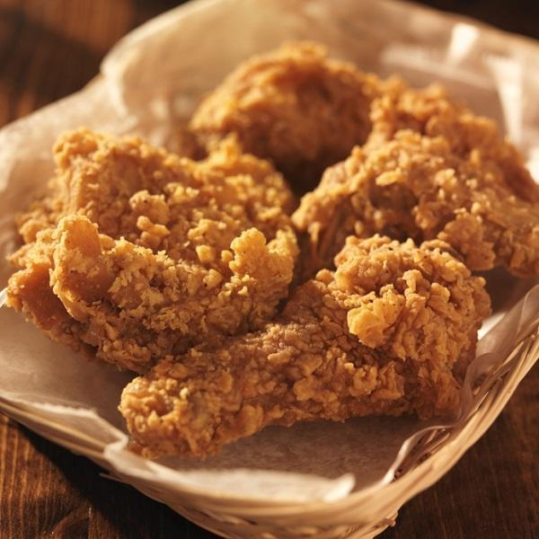

Fried Chicken

Description
Fried chicken is chicken battered and then fried in oil,
either in a pan or under pressure.
Ingredients
Steps
- To make the spice mix, combine all the ingredients. Whisk the milk with the vinegar,
egg, ½ tsp salt and 1 tbsp spice mix in a bowl or deep plastic container to make the
buttermilk marinade. Open the chicken thighs and put between two pieces of baking parchment,
then flatten using a rolling pin. Transfer to the marinade, then cover and chill for 4 hrs, or overnight.
- Make the coating by combining the flours and turmeric with most of the remaining spice mix (reserving 1 tsp)
and a generous pinch of salt. Drain the chicken thighs, reserving the marinade. One by one, dredge each thigh
in the flour, then dip in the reserved marinade, then dredge again in the flour, pressing on as much as you can
to coat. Transfer the coated thighs to a large plate.
- Heat a 10cm depth of oil in a shallow saucepan or deep-fat fryer until it reaches 175C. Lower two or three of the
thighs in at a time and fry undisturbed for 3 mins, making sure the temperature doesn’t drop below 160C (it should
stay at about 170C). Flip the thighs, then fry for another 2-3 mins until deeply golden and crisp on both sides.
Lift the chicken out and transfer to a tray lined with kitchen paper to drain, then put on a rack and keep warm in
a low oven while you fry the remaining thighs.
- When all the chicken has been fried, combine the reserved spice mix with 1 tbsp flaky sea salt and sprinkle over the chicken to serve.